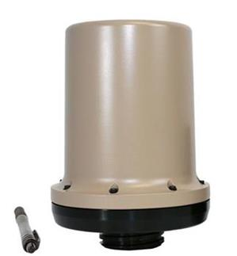
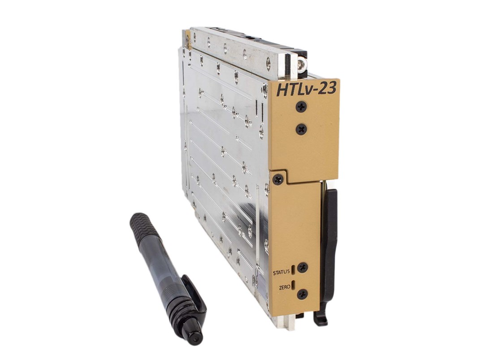
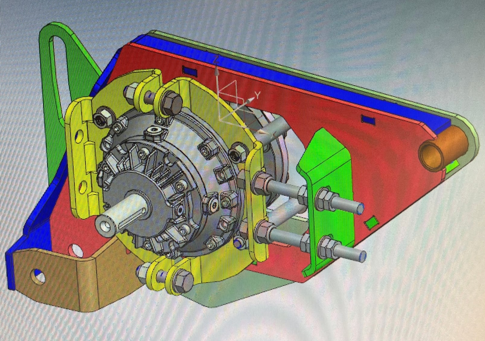
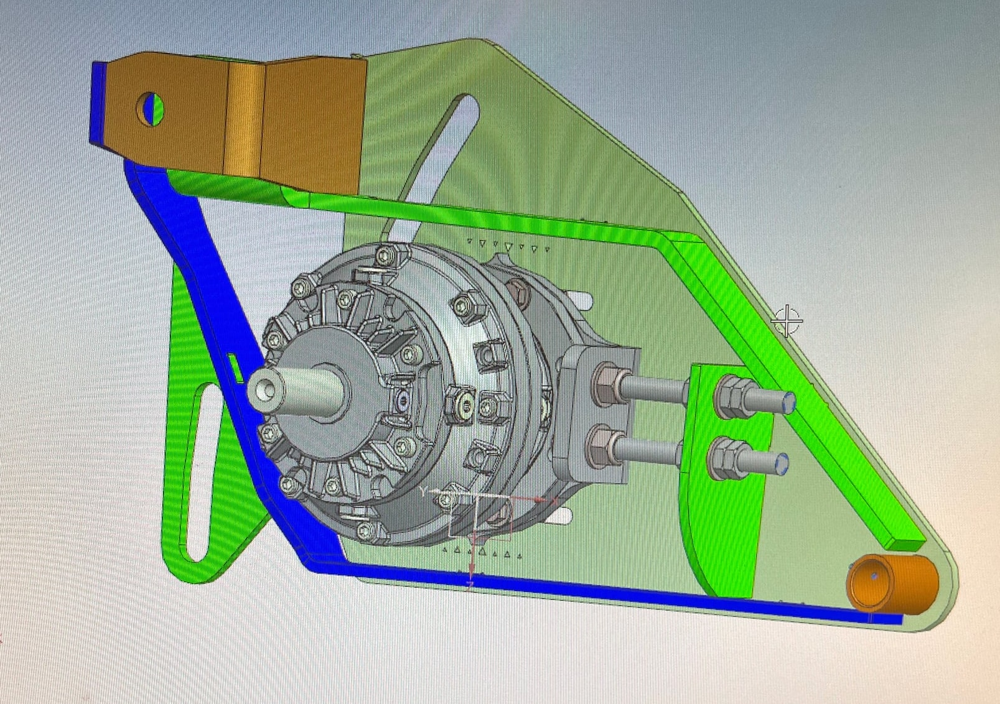
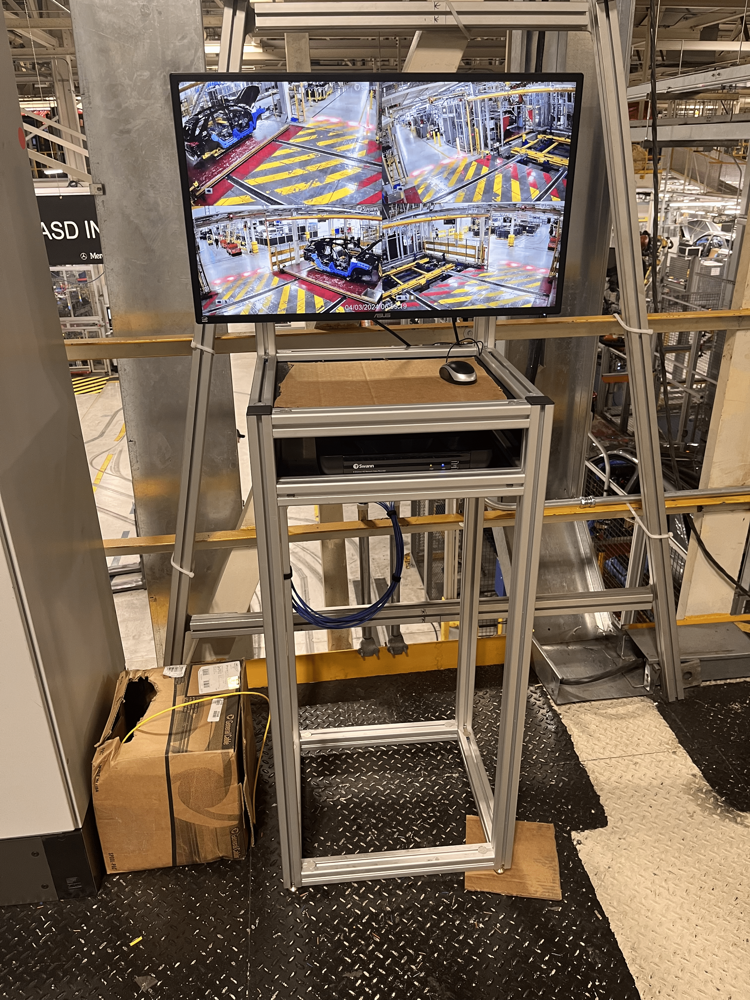
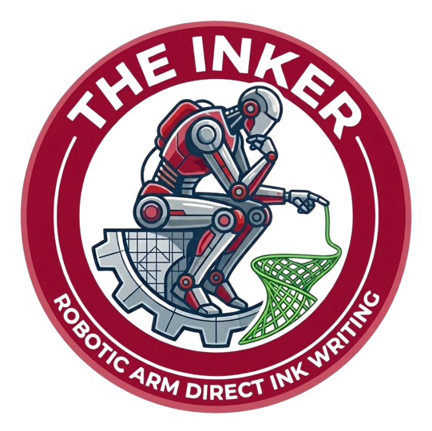

At Herrick Technology Laboratories, a defense radio contractor, I worked on the mechanical packaging and testing of direction-finding antennas and radio card assemblies. My work connected detailed CAD changes to the hardware’s fit, protection, and thermal performance.
Design → test → refineMechanical Engineering Intern · Germantown, Maryland

Direction findingAntenna packaging & protection

3U VPXRadio card mechanical packaging
Product imagery: Herrick Technology Laboratories. DF antenna family ↗ · 3U VPX family ↗. Images illustrate the product families; my contribution was to mechanical packaging and testing.
01 / ProtectAntennas & carrying cases+
I prepared antenna hardware for drop and immersion testing and designed custom carrying cases with calculated foam inserts to support transport and handling.
02 / PackageCards, drawings & fit+
I updated drawings, repaired CAD models and bills of materials, and made mechanical packaging changes. I used Altium board layouts to coordinate the electronics with their mechanical envelopes.
03 / ValidateThermal testing & calculations+
I performed physical thermal tests, calculations, and Autodesk CFD simulations to compare parts and support thermal testing standards. I also evaluated size, weight, power, and cost for RF assemblies.
Behind the packaging Drawing quality and repeatable design work+
Keep the design record usable
Repairing CAD references, drawings, and BOMs helped standardize the database and reduce downstream manufacturing errors. The work required attention to both the assembly and the documents used to build it.
Automate recurring details
I developed Creo .hol files for threaded inserts and automatic drawing callouts, making recurring design details faster to create and more consistent.
02 / Spudnik Equipment · Summer 2024
Mechanical design & reliability
A simpler mount. A more reliable drivetrain.
A sugar beet harvester’s chain drive was difficult to tension, assemble, and service. I redesigned the layout and mounting arrangement to address those problems together.
10 fewer partsin the redesigned assembly

BeforeOriginal mounting assembly

AfterMy simplified mounting design
Behind the design Problem, decisions, and validation+
The problem
The drive suffered from chain skipping and whip. A low point in the chain path also created guard and mud interference. Stacked steel plates and through-bolts made assembly awkward in a confined space.
My contribution
I investigated the failure modes and iterated layouts in NX. I raised the chain’s low point, incorporated tensioning arms, and simplified the mounting arrangement to improve assembly access.
Validation & result
After implementation, the system ran at speed without the chain skipping observed previously. The assembly used ten fewer parts. This result describes the design from my internship, rather than the machine’s current production configuration.
What I took forward
Reliability and service access belong in the same design discussion. Working with the hardware helped me see constraints that were less obvious on a CAD screen.
▶ Watch the drivetrain run Original internship footage+
The clip shows the mechanism running. The testing context and my observations are described in the engineering notes. Download video
03 / Mercedes-Benz · Fall 2024
Machine vision & production automation
Print. Inspect. Keep moving.
I designed an angled printer stand and tested scanning angles to reduce glare. Working alongside the robotics lead, I helped integrate Keyence vision inspection so labels could be graded as they printed.
≈10 secondssaved by removing the separate handheld scan
Angled printer stand and Keyence vision scanner, installed on the production line.Project details Design and integration+
My contribution
I tested the print and scan geometry, designed the angled stand, and helped install the hardware. I worked alongside the robotics lead on vision setup and the automatic grading sequence.
The result
Automatic inspection removed a separate handheld scan, reducing the label workflow by approximately ten seconds.
04 / Mercedes-Benz · Summer 2025
Data analysis & workflow automation
A clearer picture of production.
I built Power BI tools to automate recurring scrap reporting and investigate how defect, repair, reorder, and chargeback information moved between departments.
Hours → minutesfor a separate monthly reporting workflow
Behind the analysis Delivered tools and proposed improvements+
Reporting automation
A recurring monthly report depended on manual spreadsheet preparation. I built a Power BI reporting model to clean the inputs and generate charts, reducing preparation from roughly six hours to minutes.
Traceability investigation
In a related project, I combined scrap and supplier-defect information and investigated inconsistencies. I mapped how records moved between five systems and their owning departments, identifying where information could be lost or duplicated.
What I delivered
Reporting tools and a documented process map supported a proposal for a more connected scrap and reclaim workflow. The proposal is distinct from an implemented plant-wide system or a verified financial saving.
About this dashboard image
The layout comes from the Power BI dashboard I made to compare scrap and supplier-defect information. This portfolio image has been edited with fictional data throughout, including the chart values and bar heights. It shows the report’s structure without displaying the original supplier or production data.
ReportMonthly reporting, automated+
I replaced a complex spreadsheet workflow with Power BI data cleansing and chart generation, then embedded the interactive report in PowerPoint. Preparation went from roughly six hours to minutes.
TraceFind the gaps between systems+
I brought scrap and supplier-defect data together, prioritized the largest issues, and traced the repair, reorder, and chargeback process across five systems. The investigation informed a proposal for a connected scrap management process.
ImproveTools the team could use+
I supported part tracking, reporting, and process documentation, identified automation opportunities, co-developed agents with the Data Team, and led training sessions on AI tools for production workflows.
05 / Mercedes-Benz · Spring 2024
Maintenance engineering & hands-on fabrication
Small parts. Better-running systems.
In maintenance engineering, I worked close to the equipment: reverse engineering broken parts, designing supports, and making replacement hardware easier to find and use. It was an opportunity to take ideas from a model to the shop and back to the production line.
Model. Fabricate. Install.CAD and practical improvements for production equipment

Mobile camera cart for diagnosing production-line faults.
RestoreSupports & replacement parts+
I corrected warped front-end mounts that caused headlight misalignment and reverse engineered building roof expansion joints, replacement rollers, and roller mounting plates.
OrganizeRoller storage that fits the job+
I created roller nestings and organized lineside storage to make replacement parts easier to find and inventory counts easier to maintain.
MaintainPractical equipment upgrades+
I designed tablet mounts to improve ergonomics and prevent cable damage, plus a mobile camera cart for fault diagnosis. I also supported vibration analysis, flow-meter, and pit-lighting improvements.

Currently building / Senior capstone
Robotic arm 3D printing.
In progress
Our team is connecting the fluid dispenser with the KUKA arm software and programming the prints for robotic direct ink writing.
On the materials side, we’re testing and optimizing frontal-curing polymers for 3D printing.
A little about me
Comfortable in CAD. Happiest near the hardware.
I like understanding how the whole system works, then getting close enough to find what’s actually causing the problem.
My experience spans defense radio hardware, agricultural equipment design, automotive maintenance, battery production, and production data. I’m especially interested in mechanical design roles that connect to robotics, testing, and automation.
Education
University of Alabama B.S. Mechanical Engineering · May 2027 Robotics minor candidate · GPA 3.96 / 4.0
Tools I’ve used
NX, SolidWorks, Creo, Autodesk CFD, Power BI, Power Query, MATLAB, Python
Hands-on work
3D printing, machining, welding, prototyping, and hardware testing